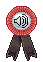
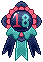
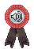
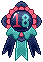

the ultimate universe hopper
Yadyra is what many would consider being an enigma; known as the balance and overseer of the universe as it is, a creature able to tear time and space asunder. The man easily scoffs at these stories and plays them down, though not out of humbleness, but more the desire to shrug them off—he sees no reason to awe over what to him merely seems like child's play.
Yadyra, at his core, is an old being born out of existence itself with a purpose to make sure the delicate balance of life and death is not disrupted throughout this reality and many others.
Out of sheer curiosity and boredom, he often traverses across different planets and realities to satisfy his itch to observe and see how possibilities play out (sometimes with a little nudge from him one way or another), but otherwise remains impartial in his observations an actions; only those daring to toy with the flow of life itself will see him stepping in.
He is quite a stoic and serious man with a shitlord energy about him, quick witted and able to throw quips and verbal stabs towards others. Often accompanied by his 'son' and companion star who is used as a stress ball to squeeze.


Character
Likes
- books, many books...
- odd artifacts
- people doing the unexpected
- schedules and timeliness
- deflating big egos
Dislikes
- loud people
- most other celestials / gods
- minimalism aesthetics
- veering off schedules
- uncontrolled temper tantrums
Story

Intro
Space is vast, full of endless possibilities, the ancient one whose eyes have seen the worlds beyond him, and all around him, full of precious life, knowledge, people, more ... he goes on to the next peak of his endless interests. There is so much to see, even if he knows it all, and the possibilities they have laid before themselves. Eyes that reach vastly across all time and space. The toothy grin of perhaps pride grows on him. It was always so fascinating to see change and how species grow.
The worlds he has visited were always short visits, nothing ever beyond a few months since he's his curiosity was generally filled within the time frame, he couldn't say it was especially boring or unfilling, but he never really had any reason to stay to them, almost all of everything was the life that had a purpose that kept them moving in a rhythmic existence, and you cannot completely wish to watch more of it.
But the planet Earth caught his interest, more than others since living here, the humans, had odd movements of life, they acted in harmony, others times pure chaos. His toothy grinned returned. This was interesting to him, how they reacted to him was also new. He mimicked their humanness for a little while, getting used to the human language as a whole.
Origin
A life that started with one thing. A wish. A desire to protect and prolong life. The beast opened his eyes for the first time upon this request. He doesn't know his birth, just his purpose. Watch, prolong, and react when necessary. Yes, that was right. He was a simple word, a guardian. Knowledge of it all belonged to him. All of it. He knows you, me, and the universe. But he will not mind it, at all.
He simply wishes to watch life go on and observe the actions all forms of life take, be it with the simplest organism that actions are moving its cells around or the largest action of life moving in wars, the stars going out, or starting a new course of a sun. He sighs as the flow of the universe is ever unpredictable, but predictable at the same time.
He landed on one of the many human parallel planets, unpredictable some of these humans are. Their feelings are sometimes too much of a "thing." He found them interesting, hilarious, and something to observe more in-depth when he had a chance from his other curiosities. He walked with his self-made star, they were basically just a brilliant source of magic put into a star, giving them a will, but it's really just an acting program with a "soul".
As he was going about his day in this world, he came across a horrific scene—well ... horrific for a human. He had seen this before, a caravan attacked, looted, and left to burn, the one who likely drove this was either taken or killed. Sad as it was. It wasn't new to him, but what was the tiny life he found, the star that followed him pointed it out, still breathing, but not crying, and very weak.
Yadyra had an idea. He would take the child, and see if he could change it. If not, it was going to die either way, so why not? There was so much time, for the little things. So, taking the child from the women's hands, he left. After many years, the child, he would name Glosyia, a play on to an ancient hero name, and quite a popular name around this time, even if it was a female's name, that didn't matter to him.
He had planned to let the child go at some point, but he was, while experimenting, screwed it up, and accidentally implanted a small piece of himself into the child. Oh, well, a 1/5th of a personality, but ... he sighed, well, his child now, as it goes.
As times passed, and the three, yes, three now, moved worlds together, regardless if had to be a little fetch story for his son, but that wasn't a story he was going to tell, no way in hell.
...He's been smiling at you, you know. Listening to his story, even if you are to never meet him again, he will always have known of you, and your story, rest assured, he found you interesting for the time, as you read, and for the time you were around.
He won't wish anything for you, he has only seen you. And now you have seen him.
"Pleasent beginnings, is it not?" He said, coldly, a toothy grin on his face. — RuinedCrown
Moodboard
Design
Design Notes
- He has no human-like ears; the feathers adorning the sides of his head are his 'ears'.
- The lines going down his face extend from jaw all the way up to underneath his hair.
- Multiple eyes are optional; they have no set place they appear on his body.
- His arms and neck are 'feathered', following the same colour of his ear feathers, though it is not a necessity to draw his hands feathered. His neck is a must though.
- Please view his ref sheet for full details.
Trivia
-
Literal embodiment of the
cuil theory, like full
seriously it's just him
- To be fair, any weird, surreal things like the backrooms or endless ikea or stuff like that is the type of 'aesthetic' he is, non-sensical, otherwordly bullshit
- He has no true form; as a celestial being and with a celestial body, there is no solidness to his form. As such, he's decided upon a humanlike body that he's been maintaining for years, though devoid of any parts he deems unnecessary like organs.
- As a hobby, he tends to place himself into worlds through what he likes to call 'simulations', suppressing his memory and living in a world for as long as it amuses him or serves a purpose; this is among the few ways he finds amusement (and is an apt excuse for me to have him explore medias).
- Will break the fourth wall, considering he's made to be a being that's not constrained by such concepts. You know he can also talk to you, right?
- Although impartial, he has very much pushed and manipulated some planets to incite chaos and disorder for the sheer curiosity in what the outcome would be, though none of his adjustments are to lead to mass extinction.
- In the line of 'guardians', he is currently the fourth; it was only through meeting Ahaur that he even gained the knowledge of the existence of the other three who are now either retired or have been killed.
- He and Ahaur tend to oversee the flow of life and death, which includes the reincarnation cycle of souls ... and the disposal and trimming of them through the demon network (with Nameless at its head).
- Unfortunate owner of a very pink cowboy hat ... thanks to Ahaur, mostly.
- Many tend to call him either the Guardian or Pink Man (derogatory); saying his name, although not taboo, is often avoided by most people.
- Makes some nice bread.


 


